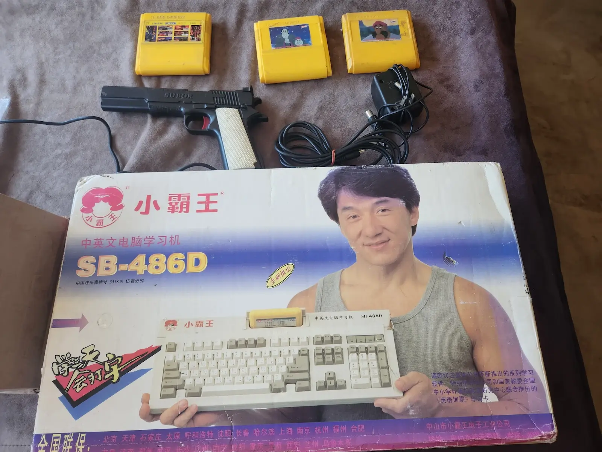
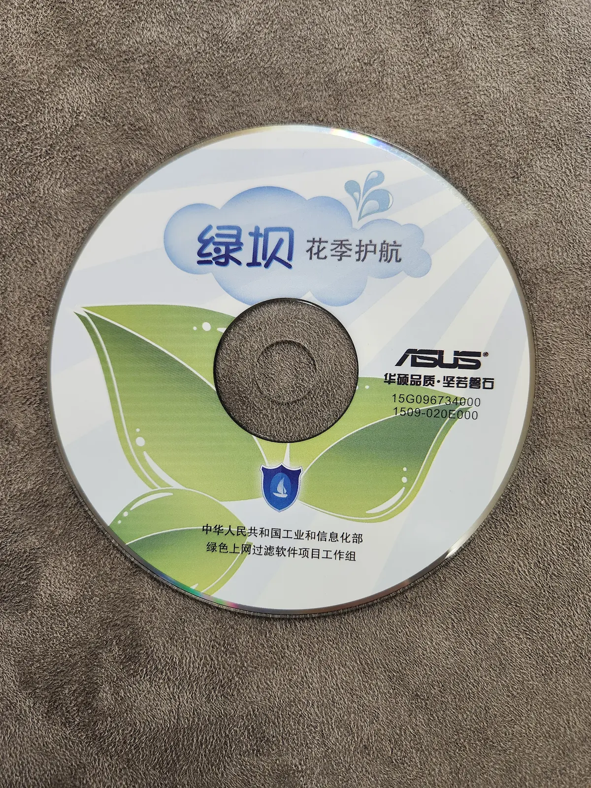
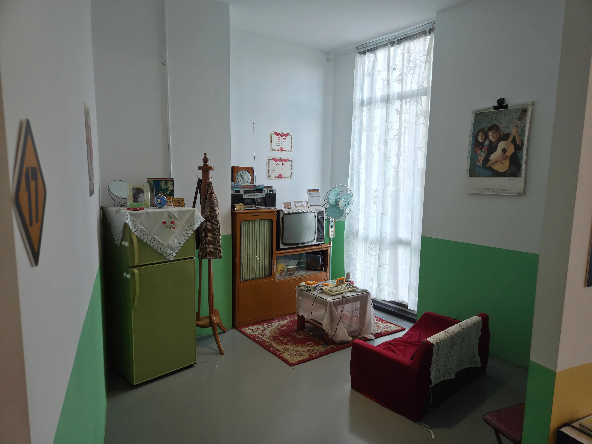
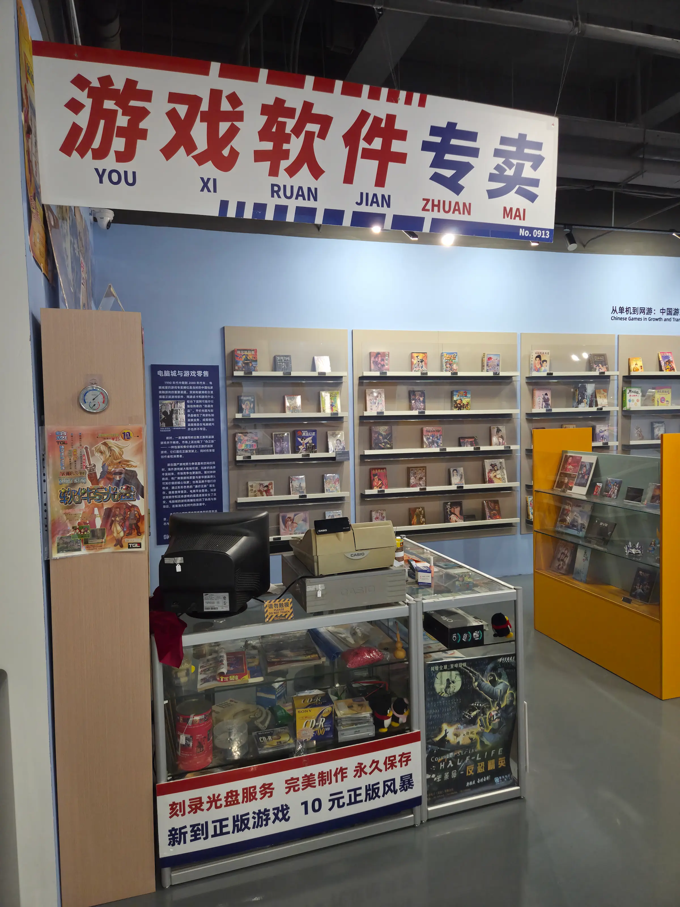

PhD in East Asian Studies, University of Arizona
2022–presentDoctoral Candidate · Advisor: Hai Ren
Dissertation: “The Sin of Play: The Ludophobic Reception Against Video Games and The Act of Play in China.”
/yen-chen jahng/ · 张晏晨
PhD Candidate in East Asian Studies, University of Arizona | Director of International Relations, Learning Games Initiative Research Archive (LGIRA)
Yanchen Zhang studies Chinese video game history, ludophobia, and the cultural politics of play in modern China. His doctoral dissertation, The Sin of Play: The Ludophobic Reception Against Video Games and The Act of Play in China (advised by Hai Ren), traces how notions of zhengshi (legitimate, productive pursuits), educational anxiety, and state governance have shaped the conditional legitimacy of digital play from the reform era to contemporary livestreaming platforms.
His scholarship combines historical archival work with media archaeology and platform studies. Alongside building a personal digital archive of roughly 5,000 issues across 50 Chinese gaming periodicals (1991–2022) and companion CD-ROMs, he serves as Director of International Relations at the Learning Games Initiative Research Archive (LGIRA), collaborating with Ken McAllister and Judd Ruggill to collect and preserve Chinese gaming hardware, software, and material culture.
assets/portrait.webp
Scholarship
Doctoral Candidate · Advisor: Hai Ren
Dissertation: “The Sin of Play: The Ludophobic Reception Against Video Games and The Act of Play in China.”
University of Southern California
Master’s Thesis: “The Lineage of Figures and Attributes of Xia Embodied in Chinese Xia Video Games.”
Kent State University
Magna cum laude, Valedictorian
Liu, S., Liu, H., & Zhang, Y. (2023). The popularity of “X Gou”: Analysis of Internet buzzwords from the Perspective of memetics. Selected Papers of the 27th Conference of Pan-Pacific Association of Applied Linguistics.
Yanchen Zhang, “The Sin of Play: Zhengshi and the Conditional Legitimacy of Video Games in China,” Revise and resubmit invited by The Journal of Popular Culture.
Yanchen Zhang, “Why Have Nationalistic Video Games Failed in the Chinese Market?,” ROMchip: A Journal of Game Histories (Revised and resubmitted, September 2026).
Independent Research Project
Assembled a digital archive of ~5,000 issues across ~50 Chinese periodical titles (1991–2022) with companion CD-ROMs through personal collecting, retrospective forum searches, and collaboration with amateur preservationists to study debates on play, educational marketing, gaming technologies, and player experience.
Director of International Relations · 2024–present
Collaborates with Ken McAllister and Judd Ruggill on acquiring and documenting Chinese gaming artifacts; conducted independent fieldwork at the China Game Museum in Shanghai (August 2026), producing a photographic record and written report on exhibitions, playable displays, and historiography.
“The Sin of Play: The Criticisms against the Act of Play in China.” Southwest Popular/American Culture Association (SWPACA) Conference, Albuquerque, NM (Feb 22, 2025).
“TV Shows Can Be Nationalistic but Games Can’t: The Absence of Nationalistic Chinese Video Games.” SWPACA Conference, Albuquerque, NM (Feb 21, 2024).
“The Sin of Play: The Criticisms against the Act of Play in China.” Central and Eastern European Game Studies (CEEGS) Conference, Leipzig, Germany (Oct 20, 2023).
Primary Sources & Material Culture
Representative selections from Chinese gaming artifacts acquired for the Learning Games Initiative Research Archive (LGIRA), museum fieldwork in Shanghai, and an ongoing personal digital archive of approximately 5,000 Chinese gaming periodical issues (1991–2022).

Subor SB-486D Learning Machine
assets/subor_sb486d.webp
Original retail packaging featuring Jackie Chan alongside a Subor light gun and Famicom-compatible yellow cartridges—illustrating how domestic gaming hardware navigated parental anxieties through educational framing. Collected by Yanchen Zhang during his archival work for the Learning Games Initiative Research Archive (LGIRA); now housed in the LGIRA collection.

Green Dam Installation CD-ROM (2009)
assets/greendam_cdrom.webp
Hardware-bundled installation disc distributed with ASUS personal computers during China’s 2009 Ministry of Industry and Information Technology (MIIT) content-filtering initiative, documenting state technological governance and anxieties over youth access to home PCs. Collected by Yanchen Zhang during his archival work for the Learning Games Initiative Research Archive (LGIRA); now housed in the LGIRA collection.

1990s Chinese Domestic Living Room
assets/gmc_living_room.webp
A Subor (Xiaobawang) keyboard-style learning machine and yellow cartridges sit before a CRT television beneath two school merit certificates (jiangzhuang), capturing the spatial coexistence of play and parental educational expectations. Exhibition display curated by the China Game Museum (Shanghai); fieldwork photograph by Yanchen Zhang, August 2026.

Computer Mall Game Retail Counter
assets/gmc_computer_mall.webp
Glass display cases advertising both budget genuine releases (“10-yuan genuine storm”) and custom CD-R burning services illustrate the hybrid commercial and informal circulation networks of PC gaming in urban China. Exhibition display curated by the China Game Museum (Shanghai); fieldwork photograph by Yanchen Zhang, August 2026.
Pedagogy
15-Week Undergraduate Seminar · Sample Syllabus
An interdisciplinary seminar introducing contemporary Chinese popular culture, modern history, and society through video games examined as designed systems, material technologies, commercial products, and contested everyday practices. Across fifteen weeks, students analyze game studies theory, comparative moral panics, Confucian and modern ideologies of leisure, wangba (Internet cafés), state regulation, nationalism, livestreaming governance, and the global reach of the Chinese game industry.
Reading: Johan Huizinga, Homo Ludens (Ch. 1–2). · Featured Game: Baba Is You (2019).
Reading: Daniel Muriel & Garry Crawford (2020), Games and Culture. · Featured Game: The Stanley Parable (2013).
| Course | Title | Terms |
|---|---|---|
| CLAS 150C1 | Pyramids and Mummies | Fall 2025, Fall 2024 |
| FREN/ITAL 231 | Fashion and Culture | Fall 2025 |
| HUMS 150B1 | Mind-Altering Substances in the Ancient World | Spring 2025, Fall 2024 |
| RELI 367 | Yoga | Spring 2024 |
| CLAS 160B1 | Meet the Ancients | Spring 2024 |
| KOR 251 | Introduction to Korea Through Film | Fall 2022 |
| KOR 352 | Class, Gender, and Family in Korea | Fall 2022 |
Public Scholarship
“Video Games Are China’s Next Soft Power Grab”
Tim Brinkhof
“中国はビデオゲームを次のソフトパワーの狙いとしています”
Winking Studios
“‘Black Myth : Wukong’, Un Jeu Vidéo à Succès... et plus Si Affinité Pour La Chine”
Sébastien Seibt
“Black Myth: Wukong – Why the Chinese game is taking the world by storm”
Al Jazeera Staff
“« Black Myth: Wukong » : le soft power chinois passe aux jeux vidéo”
Peggy Baron
“Black Myth: Wukong, Gim AAA Cina yang Fenomenal & Kontroversial”
Yoga Cholandha
“Game Awards 2024 : « Black Myth: Wukong », simple jeu vidéo ou outil géopolitique ?”
Rémi Capra-Brocard
Curriculum Vitae & Correspondence
President’s Lists & Dean’s Lists (2015–2018), Kent State University
Peer Reviewer, East Asian Forum
Organized the East Asian Language and Culture Festival (2023, 2024), 2023 AETA Conference, CEAS Symposium 2023, Tucson Festival of Books, UArizona Language Fair 2023, and academic talks and film screenings.
Institutional Email
yzhang25@arizona.eduDepartment
Department of East Asian Studies, University of Arizona
Learning Service Building, 102Research Archive
Learning Games Initiative Research Archive (LGIRA)
Transitional Office Building, 3rd floor
Place this image inside your assets/ directory to inspect the full uncropped photograph.